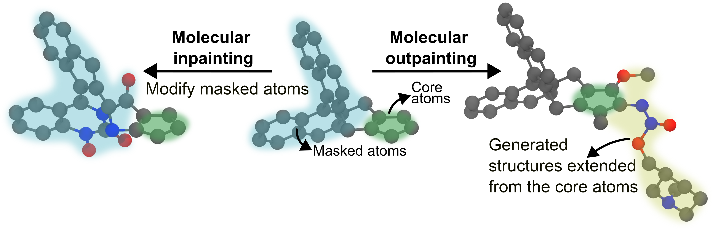

Tutorial 6: Structure-Guided Generation¶
Prerequisites: Tutorial 5 — Generation Overview · You’ll learn: inpainting, outpainting and SILVR with 3D geometric constraints, and how to tune every parameter · Next: Tutorial 7 — Property-Directed Generation
At a Glance¶
Objective |
Modify, extend, or softly follow a reference 3D structure. |
You need |
A compatible checkpoint, an XYZ reference, and verified zero-based atom indices where required. |
Main command |
|
Success looks like |
Generated XYZ files preserve or follow the reference according to the selected mode. |
This tutorial explains how to guide molecule generation using structural constraints, such as filling in a missing piece (inpainting), growing a molecule from a fragment (outpainting), or softly steering a whole molecule towards a reference shape (SILVR).
Warning
Atom indices are tied to graph construction. mask_node_index values are 0-indexed positions in the atom list of your XYZ file. If you preprocess the molecule (reorder atoms, remove hydrogens, add atoms) the indices will shift and the mask will apply to the wrong atoms — silently. Always double-check indices against the exact XYZ file passed to reference_structure_path, and set use_noised_conditioning: true only if the base model was trained with noised conditioning (check the training config).
Contents¶
Introduction: The concept of guiding generation with a structural template, and which mode to pick.
Inpainting: How to configure and run generation to fill in a missing portion of a molecule.
Outpainting: How to grow a molecule from a given substructure.
SILVR: How to softly steer a whole molecule towards a reference, with no frozen atoms.
Tuning Parameters: Intuitive guide to tuning all parameters for every task.
1. Introduction¶
Structure-guided generation allows you to influence the output of the diffusion model by providing a starting molecular structure. This is useful for tasks like:
Inpainting: Varying initial structures (either the whole molecule or replacing a specific part of it).
Outpainting: Extending a molecule from a given fragment.
SILVR: Producing a new molecule that resembles a reference — typically a set of crystallographic fragments in a binding site — without copying any of it.

The process involves providing a reference structure in an XYZ file and specifying which parts of the structure to modify or keep fixed. Note that all atom indices are 0-indexed. You can create your experiment configuration files in any directory, as the base templates are bundled with the package.
1.1 Which mode do I want?¶
All three take a reference_structure_path and all three run on the same
unconditionally-trained EDM checkpoint — no retraining, no extra model. The
difference is what happens to the reference atoms during denoising:
Inpainting |
Outpainting |
SILVR |
|
|---|---|---|---|
Reference atoms are… |
frozen (except the ones you mask) |
frozen |
never frozen — every atom stays mobile the whole way |
Guidance is… |
hard: unmasked atoms are pinned |
hard: scaffold is pinned, growth is seeded and constrained |
soft: each step nudges the latent towards a re-noised reference |
You must specify |
|
|
|
Output contains the reference |
yes, atom-for-atom |
yes, atom-for-atom |
no — a new molecule that merely resembles it |
|
≥ reference (clamped up) |
strictly > reference |
≥ reference (clamped up) |
Geometric constraints |
overlap-push |
overlap-push + bonding |
none |
Typical use |
swap a substituent, vary part of a known molecule |
grow a fragment into a lead |
fragment merging; generate a ligand resembling several fragments at once |
Rules of thumb:
You need the reference preserved exactly → inpaint or outpaint.
You need something new that occupies the same space → SILVR.
You have several disconnected fragments and want one molecule spanning them → SILVR (this is the case it was designed for; inpaint/outpaint assume one connected scaffold).
You want a tunable dial between “ignore the reference” and “reproduce it” → SILVR’s
silvr_rate.
2. Inpainting¶
Inpainting allows you to vary initial structures. You provide a template molecule and specify which atoms to “mask”. The diffusion model will then generate new structures for the masked atoms and connect them to the rest of the molecule, allowing you to vary specific parts or the entire structure.
Key Inpainting Parameters¶
The condition_configs section for inpainting uses a sub-dictionary called inpaint_cfgs to group all specific inpainting settings.
Parameter |
Location |
Description |
|---|---|---|
|
|
The expected size of the final molecule. Should be ≥ the number of atoms in the reference structure. A size below the scaffold is automatically clamped up to the scaffold size (with a warning) — inpaint regenerates masked atoms in place, so the size is effectively derived from the scaffold. |
|
|
CRITICAL: Path to your own XYZ file containing the molecule you want to inpaint. |
|
|
Component to inpaint ( |
|
|
Translate scaffold so its centre of mass is at the origin before generation. |
|
|
Add noise to the scaffold at each denoising step. Set |
|
|
Keep at |
|
|
Timestep (0–T) to restart from on retry (inactive while |
|
|
Number of trajectory frames to save for visualisation (0 = disabled). |
|
|
CRITICAL: 0-indexed list of atom indices to remove and regenerate. |
|
|
How much noise is added to the masked region (0–1). Higher = more creative freedom, lower = stays closer to the original. |
|
|
Add noise to the initial masked positions before denoising starts. |
|
|
Fraction of denoising during which overlap-push constraints are active ( |
|
|
Multiplier on covalent radii for bond-distance tolerance. Code default |
Configuration¶
# my_inpaint.yaml
defaults:
- tasks: diffusion
- interference: gen_inpaint # Base template bundled with package
- _self_
name: "akatsuki"
chkpt_directory: "models/edm_pretrained/"
atom_vocab: [H,B,C,N,O,F,Al,Si,P,S,Cl,As,Se,Br,I,Hg,Bi]
diffusion_steps: 600
seed: 9
interference:
num_generate: 50
mol_size: [50, 60]
output_path: "results/my_inpainting_run"
condition_configs:
reference_structure_path: "path/to/your_molecule.xyz" # your own XYZ file
condition_component: xh
inpaint_cfgs:
mask_node_index: [5, 30, 31, 6, 7, 45, 8, 32, 9, 10] # ... the atom indices to regenerate
denoising_strength: 0.8
constraint_strength: 0.8
scale_factor: 1.1
Running Inpainting¶
MolCraftDiff generate my_inpaint.yaml
3. Outpainting¶
Outpainting is the process of growing a molecule from a given fragment. You provide a starting fragment, and the model will add new atoms to it.
Key Outpainting Parameters¶
The condition_configs section for outpainting uses a sub-dictionary called outpaint_cfgs to group all specific outpainting settings.
Parameter |
Location |
Description |
|---|---|---|
|
|
The expected size of the final molecule (fragment + generated part). Must be larger than the scaffold — there must be atoms to grow. An explicit |
|
|
CRITICAL: Path to your own XYZ file containing the fragment you want to grow from. |
|
|
Component to outpaint ( |
|
|
Translate scaffold so its CoM is at the origin before generation. |
|
|
Add noise to the scaffold at each denoising step. |
|
|
Keep at |
|
|
Timestep (0–T) to restart from on retry (inactive while |
Key name.
connectorsis the single key for every outpaint mode (outpaint,outpaintft,outpaint_cfg,outpaint_gg,outpaint_cfggg).connector_dictsandconnector_indicesare deprecated aliases that still work and warn.n_bondsis honoured by plainoutpaintonly; the other modes apply no bonding constraint and use the keys alone.
| connectors | outpaint_cfgs | CRITICAL: {atom_index: [n_bonds]} — which scaffold atoms to grow from and how many bonds each should form. |
| t_start | outpaint_cfgs | Fraction of T to start denoising from (e.g. 0.9 → 90% of steps). |
| seed_dist | outpaint_cfgs | Distance (Å) from connector to place initial seed atoms. Default: 2.0. |
| min_dist | outpaint_cfgs | Minimum distance (Å) new atoms must be from all non-connector scaffold atoms at initialisation. Default: 1.0. |
| spread | outpaint_cfgs | Angular dispersion for skeleton_type: random_walk (0 = straight, 1 = standard walk); for legacy init_method: seed, Gaussian position std dev (Å). Default: 1.0. |
| n_bq_atom | outpaint_cfgs | Number of atoms at the end of the scaffold used only for seeding positions, not included in conditioning. Default: 0. |
| init_method | outpaint_cfgs | How seed atoms are initialised: skeleton (procedural), seed (raw blob), or fragment (bundled substituent). Default: skeleton. |
| skeleton_type | outpaint_cfgs | Skeleton family used when init_method is skeleton/fragment (e.g. random_walk). Default: random_walk. |
| bond_len | outpaint_cfgs | Target bond length (Å) used when placing skeleton atoms. Default: 1.5. |
| forward_noise | outpaint_cfgs | Strategy for noising the clean seed template up to t_start. Default: jitter. |
| jitter_scale | outpaint_cfgs | Positional noise magnitude for forward_noise: jitter. Must be set explicitly; it never inherits spread. |
| constraint_strength | outpaint_cfgs | Fraction of denoising during which constraints are active. Code default 0.8; the shipped gen_outpaint template sets 0.7, so that’s what you get if you inherit it. |
| scale_factor | outpaint_cfgs | Multiplier on covalent radii for bond-distance tolerance. Default: 1.1. |
Configuration¶
# my_outpaint.yaml
defaults:
- tasks: diffusion
- interference: gen_outpaint # Base template bundled with package
- _self_
name: "akatsuki"
chkpt_directory: "models/edm_pretrained/"
atom_vocab: [H,B,C,N,O,F,Al,Si,P,S,Cl,As,Se,Br,I,Hg,Bi]
diffusion_steps: 600
seed: 9
interference:
num_generate: 50
mol_size: [30, 40]
output_path: "results/my_outpainting_run"
condition_configs:
reference_structure_path: "path/to/your_fragment.xyz" # your own XYZ file
condition_component: xh
outpaint_cfgs:
connectors:
1: [3]
2: [3]
3: [3]
t_start: 0.8
constraint_strength: 0.7
scale_factor: 1.1
seed_dist: 2.0
min_dist: 1.0
spread: 1.0
jitter_scale: 1.0
Running Outpainting¶
MolCraftDiff generate my_outpaint.yaml
4. SILVR¶
SILVR (Selective Iterative Latent Variable Refinement) takes a different approach from the two modes above: nothing is frozen. Every atom stays mobile for the whole trajectory, and at each reverse step the latent is nudged a little way towards a freshly re-noised copy of the reference:
z̃ₜ = αₜ · reference + σₜ · ε (reference re-noised at this step's noise level)
z ← z − (z · αₜ · ref_mask) · rate + (z̃ₜ · ref_mask) · rate
Because the pull is applied gently at every one of the T steps rather than by pinning coordinates, the model is free to produce a chemically sensible molecule that merely resembles the reference. The reference itself never appears in the output.
This makes SILVR the right tool for fragment merging: give it several crystallographic fragments as one XYZ file and it generates a single connected molecule spanning them — something inpaint and outpaint cannot do, since both assume one connected scaffold that must be preserved atom-for-atom.
Reference — cite this paper if you use SILVR
Runcie, N. T. & Mey, A. S. J. S. SILVR: Guided Diffusion for Molecule Generation. J. Chem. Inf. Model. 2023, 63 (19), 5996–6005. doi:10.1021/acs.jcim.3c00667 · github.com/meyresearch/SILVR
Key SILVR Parameters¶
The condition_configs section for SILVR uses a sub-dictionary called silvr_cfgs.
Parameter |
Location |
Description |
|---|---|---|
|
|
Size of the generated molecule = reference atoms + however many extra atoms SILVR may invent. Must be ≥ the reference; below it is clamped up with a warning. Must be explicit if the checkpoint ships no node-size distribution — |
|
|
Must be |
|
|
CRITICAL: Path to your XYZ file. May contain several disconnected fragments. All elements must appear in |
|
|
|
|
|
Keep at |
|
|
The main dial. Per-step pull strength, |
|
|
Optional per-atom list, length = reference atom count. Overrides |
|
|
|
Configuration¶
# my_silvr.yaml
defaults:
- tasks: diffusion
- interference: gen_silvr # Base template bundled with package
- _self_
name: "akatsuki"
chkpt_directory: "models/edm_pretrained/"
atom_vocab: [H,B,C,N,O,F,Al,Si,P,S,Cl,As,Se,Br,I,Hg,Bi]
diffusion_steps: 900
seed: 9
interference:
num_generate: 50
batch_size: 4
mol_size: [30] # reference atoms + atoms SILVR may invent
output_path: "results/my_silvr_run"
condition_configs:
reference_structure_path: "path/to/your_fragments.xyz" # your own XYZ file
condition_component: xh
n_retrys: 0
silvr_cfgs:
silvr_rate: 0.01
silvr_rates: null
shift_centre: true
Running SILVR¶
MolCraftDiff generate my_silvr.yaml
Warning
One reference per run. The reference is broadcast across the batch, so every
molecule in a run is guided by the same fragments. batch_size > 1 is fully
supported and is the right way to generate many samples — but multiple
references means multiple runs.
5. Tuning Parameters¶
This section explains the intuition behind every tunable parameter so you can diagnose and fix generation problems without trial-and-error guessing.
5.1 Inpainting Parameters¶
denoising_strength — how much to vary the masked region¶
This is the most important parameter for inpainting. It controls how far the masked atoms are scrambled before the model regenerates them. Think of it as a “creativity dial”:
denoising_strength = 0.3 → mild perturbation, output stays close to original
denoising_strength = 0.7 → moderate variation, recommended starting point
denoising_strength = 1.0 → full noise, model generates freely with no memory of original
Use a low value (0.3–0.5) when you want to explore small variations around a known structure — e.g., swapping a substituent while keeping the overall shape.
Use a high value (0.8–1.0) when you want the model to generate genuinely new chemistry in the masked region, or when the masked atoms are many and structurally diverse.
mask_node_index — which atoms to regenerate¶
Choose atoms that form a chemically coherent region: a ring system, a substituent, a linker. The atoms you do not mask become the frozen scaffold — make sure the unmasked atoms include all the atoms that define the shape you want to preserve.
Tip: The connector atoms (atoms at the boundary between masked and unmasked regions) are automatically detected from the molecular graph. You do not need to declare them separately.
constraint_strength (inpainting)¶
Controls when the overlap-push constraint is active during denoising. The constraint prevents generated atoms from crashing into the frozen scaffold.
Leave at the default (0.8) in most cases. Only reduce it if the scaffold is very small and the constraints are visibly over-correcting the trajectory.
Note
The bonding sub-constraints (enforce + ensure_intact) are intentionally disabled for inpainting. Connector topology is determined from the molecular graph, so proximity-pull logic is not needed.
scale_factor (inpainting)¶
Tolerance on bond distances. The overlap threshold for each atom pair is (cov_radius_A + cov_radius_B) × scale_factor.
Raise to 1.2 if generated atoms are clashing into the scaffold in the final structure. Lower towards 1.0 if bonds to the scaffold are consistently too long.
5.2 Outpainting Parameters¶
connectors — where and how to grow¶
This is the only required parameter. Each entry {atom_index: [n_bonds]} says: “from this scaffold atom, grow exactly n new bonds.”
Choosing the connector atom: Pick the atom at the growth point — usually an atom that is under-valenced in the scaffold (e.g., a carbon with a free valence after cleaving a bond).
Choosing n_bonds: Set this to the number of new bonds you want the connector atom to form with the generated fragment. For a single chain, use [1]. For a branching point, use [2] or [3]. The model is guided to place at least this many generated atoms within bonding distance of the connector.
t_start — how many denoising steps to run¶
t_start is the fraction of the total diffusion steps used for generation. It controls the quality–speed tradeoff:
t_start = 1.0 → full denoising (all T steps), highest quality
t_start = 0.8 → 80% of steps, good quality, recommended default
t_start = 0.5 → 50% of steps, faster but coarser structures
Use 0.8–0.9 for most experiments. Only lower it for rapid screening where speed matters more than quality.
seed_dist, min_dist, spread, jitter_scale — initialisation¶
These parameters control the clean starting geometry and the separate noise
applied before denoising. spread and jitter_scale are independent knobs.
connector atom (scaffold)
│
└─ random walk (bond_len steps)
spread controls turning
jitter_scale adds positional forward noise
Parameter |
What it controls |
Increase when… |
Decrease when… |
|---|---|---|---|
|
Distance from connector to the centre of the seed cloud |
You want the fragment to grow outward and away from the scaffold |
Fragment needs to start close to the connector (short bonds, rings) |
|
Minimum distance new atoms must be from all non-connector scaffold atoms at init |
— (usually left at default) |
Scaffold is large and seed atoms can’t find valid positions far enough away |
|
Random-walk angular dispersion; with legacy |
You want a more tortuous walk |
You want a straighter walk |
|
Positional forward-noise magnitude when |
You want a noisier starting latent |
You want the latent closer to the clean skeleton |
Practical starting point: seed_dist=1.5, min_dist=1.5, spread=0.75, jitter_scale=1.0 for a directed fragment. Always state jitter_scale
explicitly; changing spread must not silently change the forward noise.
n_bq_atom — boundary atoms for seeding only¶
Adds phantom atoms at the end of the scaffold that are used only to compute seed positions, not passed to the model as conditioning. Useful when the scaffold’s connector region is geometrically ambiguous and you want to steer the seed placement towards a specific spatial direction without altering the conditioning.
Leave at 0 unless you have a specific spatial steering need.
constraint_strength (outpainting)¶
Controls the denoising window during which geometric constraints are active:
s = 1.0 ──── generation starts (full noise)
│ no constraints
s = constraint_strength ──── overlap-push activates
│ generated atoms pushed away from scaffold overlaps
s = constraint_strength / 2 ──── bonding sub-constraints activate
│ atoms pulled towards connectors; disconnected clusters merged
s = 0.0 ──── generation ends (clean structure)
Increase towards 0.9 if generated atoms drift away from the connector or the final structure shows the fragment disconnected from the scaffold.
Decrease towards 0.5 if the fragment is too rigid, diversity is low, or you are generating a large fragment that needs space to explore.
Default 0.7 works well for typical fragment sizes (5–15 atoms). For very small fragments (1–3 atoms), try 0.8–0.9. For large fragments (>20 atoms), try 0.5–0.6.
scale_factor (outpainting)¶
Scales the per-atom-type covalent bond length threshold used by all three constraint layers:
|
Bond tolerance |
When to use |
|---|---|---|
|
Tighter than covalent — atoms must be very close to connector |
Connector is a light atom (N, O) and you want a tight bond |
|
Exact covalent bond length |
Reference bond lengths |
|
10% slack |
Good general-purpose starting point |
|
Loose — allows more spacing |
Heavy atoms around connector; prevents pile-up |
Note: scale_factor also affects the overlap-push constraint. A higher value means the push-away boundary is further from the scaffold surface, giving generated atoms more room to manoeuvre around heavy atoms.
5.3 SILVR Parameters¶
SILVR has essentially one dial, which is the point of the method.
silvr_rate — how hard to pull towards the reference¶
silvr_rate = 0 → reference ignored entirely (plain unconditional generation)
silvr_rate = 0.01 → the published working value — recommended starting point
silvr_rate = 0.1 → strong resemblance, less chemical freedom
silvr_rate = 1 → reference atoms effectively replaced outright
The rate is applied per step, so its effect compounds over the full
trajectory. This is why a value as small as 0.01 produces a clear
resemblance, and why the number of diffusion steps matters: running 100
steps instead of 900 gives the pull roughly a ninth as many chances to act, and
the output will drift far from the reference. Use the checkpoint’s full step
count for production runs and reserve short runs for smoke-testing.
Note
This implementation’s reference is normalised. The published sampler mixes a
raw one-hot reference into a latent normalised by norm_values (typically
[1, 4, 10]), leaving its feature channels ~4× hot. Here the reference goes
through the platform’s normal loader, so it is scale-consistent — which means
feature guidance is ~4× weaker than the paper’s at the same silvr_rate.
Coordinates are unaffected (norm_values[0] == 1). If atom types don’t track
the reference as strongly as the paper reports, raise the rate before suspecting
a bug.
silvr_rates — per-atom pull¶
A list as long as the reference, overriding silvr_rate. Use it when parts of
the reference matter more than others — e.g. pin a known binding motif at 0.05
while letting a peripheral fragment float at 0.005. A 0 entry makes that
atom a dummy: it contributes nothing, and SILVR is free to place whatever it
likes there.
condition_component — what gets steered¶
xh (default) steers coordinates and atom types, so the output tends to
reuse the reference’s elements. x steers geometry only, leaving element
identity entirely to the model — use it when you want the reference’s shape
but not its chemistry.
shift_centre — which frame the output lands in¶
true (default) returns coordinates in the reference’s own frame, so samples
are positioned in the binding site and can be scored against the protein
directly. false returns them centred on the origin. This is a pure output
convention — it changes nothing about the generated molecule.
mol_size — how much freedom to add atoms¶
Set it to the reference atom count plus however many atoms SILVR may invent. The extra (“dummy”) atoms are what let SILVR bridge disconnected fragments into one molecule, so for fragment merging give it a generous margin. Equal to the reference count is valid and turns SILVR into pure refinement of the reference atoms. Below the reference count it is clamped up with a warning.
Verify the Result¶
Inspect both structural validity and reference agreement. Inpainting and outpainting should preserve the fixed scaffold atom-for-atom; SILVR should produce a new molecule that follows the reference without copying it. Always inspect several samples rather than relying on a single structure.
Troubleshooting¶
Inpainting¶
Symptom |
Most likely cause |
Fix |
|---|---|---|
Output too similar to input |
|
Raise to |
Output unrecognisable, ignores scaffold shape |
|
Lower to |
Generated atoms crash into scaffold |
|
Raise to |
Generated atoms hover far from scaffold |
|
Lower to |
Outpainting¶
Symptom |
Most likely cause |
Fix |
|---|---|---|
Fragment disconnected from scaffold in output |
|
Raise |
Fragment fuses into scaffold, overlapping atoms |
|
Raise |
Random-walk fragment is too straight |
|
Raise |
Starting latent is too noisy |
|
Lower |
Atoms pile up at connector |
|
Raise |
Fragment grows in the wrong direction |
|
Lower |
Bonds to connector consistently too long |
|
Lower to |
Generation is slow / low throughput |
|
Lower to |
Run aborts: “nothing to grow” / size ≤ scaffold |
|
Set |
SILVR¶
Symptom |
Most likely cause |
Fix |
|---|---|---|
Output barely resembles the reference |
|
Raise |
Atom types ignore the reference but shape is right |
Normalised-reference deviation (see §5.3) |
Raise |
Output is a near-copy of the reference, no novelty |
|
Lower towards |
Fragments stay separate, no single molecule |
|
Increase |
Samples come out at the origin, not in the binding site |
|
Set |
Every sample has an identical centroid |
|
Expected, not a bug — increase |
Run aborts: “silvr supports sampling_mode ‘ddpm’ only” |
|
Set |
Run fails drawing a size / |
|
Set an explicit |
Warning: sizes “snapped up to the scaffold size” |
|
Expected clamp; raise |